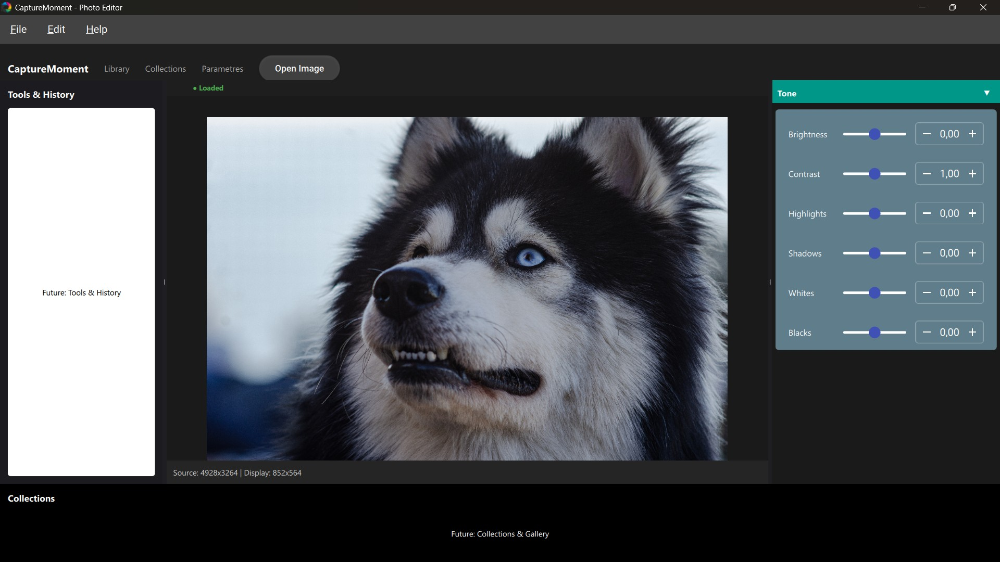

Non-destructive
The original is never touched. Every edit stays reversible at any moment.
Free & open-source
CaptureMoment is a free, open-source photo editing and developing app. Your original files stay untouched, your colors stay true and your library stays organized, simply and effortlessly, on Windows, macOS and Linux.
“A photographic moment, captured freely.”
About the project
Developed in the open and released under the GPLv3 license, the software suits passionate photographers and professionals alike: open your RAW files, let the catalog keep your library organized and enjoy truly faithful colors. Simple to use, powerful under the hood.
The original is never touched. Every edit stays reversible at any moment.
Processing is accelerated by your own hardware for near-instant results, even on very large photos.
Open-source under the GPLv3 license: use it without limits, with no subscription and no ads.
Preview
Your photos front and center, your tools within reach.

Features
Powerful tools, presented simply.
Open files from all the major brands directly: Canon, Nikon, Sony, Fujifilm and many more, with no conversion step.
Brightness, contrast, sharpness, noise reduction… Adjust freely: your original never changes.
Your photos gathered and neatly organized, all in one place.
Professional-grade color management, for consistent rendering from screen to print.
Smooth and elegant, it steps aside for what matters: your photos.
Windows, macOS and Linux today. A mobile version is on the way.
The project keeps evolving: follow the news on GitHub
Gallery
Because in the end, it all starts with a beautiful moment.


Download
Free software
Windows 10 and 11 (64-bit)
CaptureMoment-win64.exe
Download for WindowsInstaller for Mac
CaptureMoment.dmg
Download for macOSStandalone file, no installation needed
CaptureMoment-x86_64.AppImage
Download for LinuxTrouble installing? Write to us, we will get back to you quickly.
Contact
The CaptureMoment team reads every message: questions, ideas, feedback or just saying hi, everything is welcome.